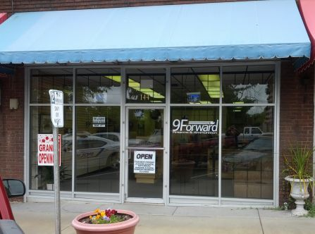
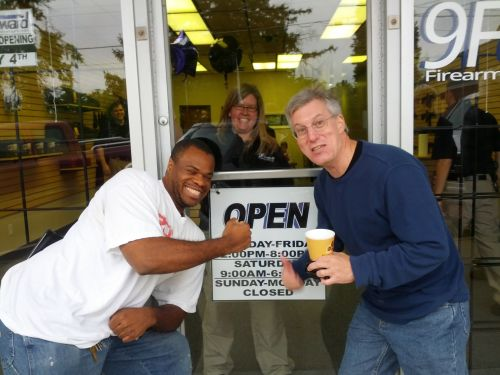

9Foward storefront on Hillsborough St. in Oxford, NC
I received a heads up through the Ladies Handgun League mailing list that a new gun store, 9Forward Firearms & Ammunition, was opening in Oxford, NC this past Saturday, May 4th 2013. Here’s the website with key details: www.9Forward.com.
- From the website: 9 Forward sells firearms, ammunition and firearms accessories.
- They are 10 minutes from The Range in Oxford, which hosts IDPA matches as well as other shooting events.
- They are closed on Sunday and Monday. So the doors will not be open again till Tuesday.
The key phrase in the email announcement that got my attention was “healthy ammo inventory”. I called Rachel, one of the owners, on Friday to check prices and limits on ammunition. The prices were very good and the limit was 5 boxes. I shared the information with my shooting partner and planned an early morning road trip to Oxford on Saturday morning. A friend and I arrived at 8:45am and were on hand for the opening at 9am. My shooting partner was already there, drinking coffee and chatting with Rachel out on the sidewalk.
Eager customers waiting as Rachel turns the sign to “Open” for the very first time.
My sister lives walking distance from the store and agreed to meet us over there to do a bit of ammo shopping with me. We all picked up 9mm rounds and I was very pleased with the prices. The store wasn’t crowded, but there was a steady stream of customers, most looking for ammo.
Rachel hugged the first customer after he paid – the store opening was the culmination of a business plan that started prior to the last election and was in doubt at a few points along the way. Flipping the sign on the front door to “Open” and ringing up that first sale was was clearly exciting, memorable, and significant to her. The enthusiasm she shared was contagious. I wanted to talk with her more but we had what we came for and she had other customers waiting.
I headed over to my sister’s house for a cup of coffee by 9:30 and did some catching up. I was ready to head back to Raleigh by 11:30 and since it was on the way, a stopped back in the store. I wanted to see if they were sold out of ammo yet. I ran into Frank from The Range as I walked back in the door and gave him a hug. My gun friends are starting to feel like family.
I noticed they had plenty of staff on hand and were clearly service oriented. Rachel laughed when I asked her if they were out of ammo and said they were not. I took the time to chat with her since she was taking a break from the register. When I asked why they are closed on Sunday, Rachel said that was their day to go shooting. Fair enough.When I asked why they chose Oxford, she said the space used to be a gun store. The previous owner closed up shop and they found Granville county to be very gun friendly. When I asked how they were able to stock ammunition when others stores couldn’t seem to get it in stock, she said they had been working on opening the store for quite some time and lining that up was something that had been in the works well before they opened. She and her husband have an interest in defensive shooting and I’ll be back to talk with her about that.
I noticed they carry Flashbang holsters for women and spoke to her about carry holsters, then the biometric safes they had in stock. I found her to be knowledgeable without being pushy or overly opinionated. She’s willing to share what she knows and let the customer decide what’s best for their situation.
I noticed that they still had space for additional inventory and I expect they will start to fill the shelves with much more inventory over time.
It was fun to be part of such a significant event and I’ll be back. I’m particularly interested in checking back for ammo. Since I don’t reload at this point, finding reasonably priced ammo in stock is a huge challenge. This may be part of my solution.


{kind=link}
{kind=link}
{kind=link}
{kind=link}
{kind=link}
{kind=link}
{kind=link}
{kind=link}
{kind=link}